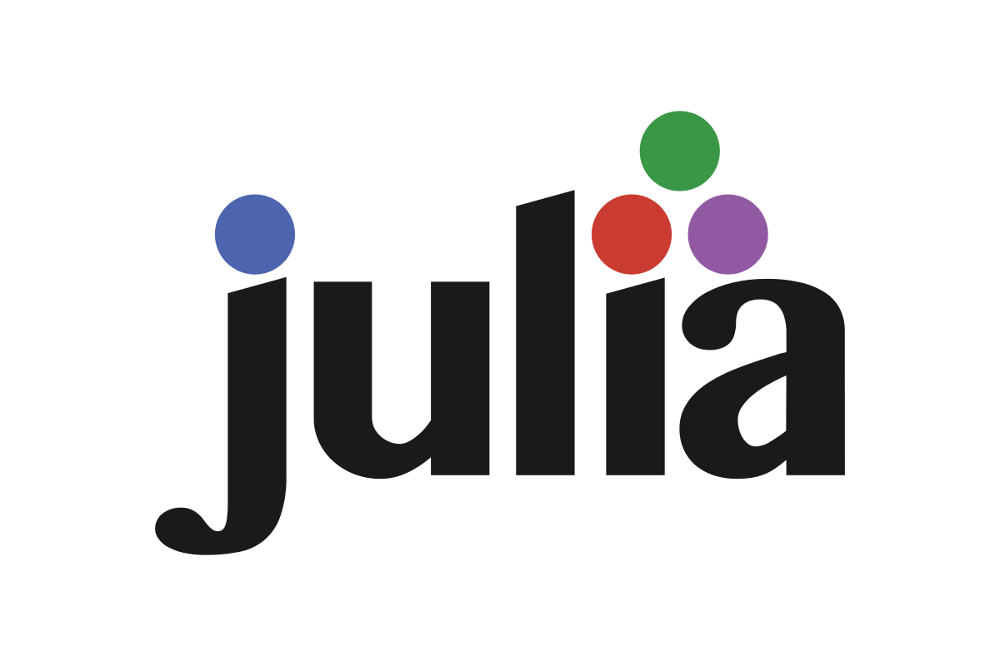

Programming with Julia

Course Schedule
Instructor: Shaikh Tanvir Hossain
Course Dates: The course is divided into two weeks (a total of 5 days from 8.30 to 5.00, including lunch breaks):
- Week 1: 23rd and 24th of March
- Week 2: 29th to 31st of March
Exercise Schedule: All exercises will be given in the second week.
Final Evaluation: To get points, you need to solve the exercises. The final evaluation will be an interview quiz (short question-answer session via Zoom). More details will be posted here gradually. For now, please install Julia, VSCode, and Jupyter Notebook.
Course Details
About Jupyter Notebooks
I already uploaded a video in Moodle. In the first video, I mentioned that you only need to install VSCode as an IDE, but actually, we also need Jupyter Notebook. In particular, you will need Jupyter Notebooks to solve the problem sets. The submissions must be done using Jupyter Notebooks, so please install it. Visit the Jupyter Notebook site and install it. If you face any issues, consider installing Anaconda. Once you have installed Jupyter Notebook, you need to install the IJulia package inside a Julia kernel.
Rough Guideline for the 5 Days
All clock times given are in local time in Germany.
23rd of March:
- Live Zoom session from 8:30 AM to 12:00 PM (with short breaks).
- Solve some practice exercises (not graded) on your own.
- Discuss solutions and answer questions in another live Zoom session from 5:00 PM to 6:00 PM.
24th of March:
- Same as Day 1.
The exercises for these two days are for practice only and won’t be graded. I’ll discuss the solutions, and you should correct your mistakes. Feel free to ask questions during the Q&A sessions from 5:00 PM to 6:00 PM.
29th of March:
- Live Zoom session from 8:30 AM to 12:00 PM (with short breaks).
- Solve graded exercises and submit via Moodle within 2-3 hours of being posted.
- Discuss solutions in a live Zoom session from 5:00 PM to 6:00 PM.
30th of March:
- Same as Day 3.
- Another graded exercise sheet will be given; submit via Moodle.
- Discuss solutions in a live Zoom session from 5:00 PM to 6:00 PM.
31st of March:
- Before the afternoon, same as the last two days.
- A graded exercise sheet will be given, and you need to submit via Moodle.
- A short quiz will be held from 4:00 PM to 6:00 PM via Zoom.
Evaluation
Submission of all three graded exercise sheets is mandatory to pass the course. You only need to score at least 40% on each exercise sheet to pass. The exercise sheets must be submitted within 2-3 hours of being posted on Moodle. Additionally, you must be present for the live quiz session via Zoom on 31st March from 4:00 PM to 6:00 PM to pass the course.
The final exam consists of the following two components:
- Passing the Exercise Sheets: Scoring 40% on each exercise sheet.
- Passing the Quiz: Performance in the quiz will impact your grade.
Resources to Start
Tutorial to Basic Syntax: This is an introduction to the Basic Syntax in Julia. Please install Jupyter Notebook and go along with it. All notebooks are available in a github repo
Manual for 1.5.3 version: Julia is being updated currently from 1.5.3 to 1.5.4., so you might not find the manual for the 1.5.4 yet! But soon there should be manual on the Julia Documentation page. Here is the older one for 1.5.3
A playlist for basic syntax: This uses an older version of the Julia. The one in the above is relatively newer. But this playlist also has an instruction how to use Jupyter notebooks.
Different Courses from Julia Academy: Julia Academy provides different courses and here you will find all resources that are used in the video lectures.
Why Julia is fast (By Steven Johnson, MIT): Excellent presentation, watch it if you can. This also explains the issue of two language problem, and why Julia is a solution for that.
Think Julia: This is free online book, you can have a look if you want!
Julia Programming for Nervous Beginners If you are struggling with for loops, if else conditions, and the basic programming techniques, then this might be helpful.
Course Materials
Day 1
Part 1: Introduction, HTML file, PDF, Zipped folder
Part 2: Basic Syntax, HTML file, PDF, Zipped folder
Part 3: Generic Programming, HTML file, PDF, Zipped folder
Day 2
Part 4: Type Inference and Type Stability, HTML file, PDF, Zipped folder
Part 5: Multiple Dispatch, HTML file, PDF, Zipped folder
Part 6: Type Construction, HTML file, PDF, Zipped folder
Day 3
- Part 7: Again Types, HTML file, Zipped folder
Day 4
- Part 8: Arrays, HTML file 1, HTML file 2, Zipped folder
Day 5
- Part 9: Metaprogramming, HTML file
Practice Problems
- Practice Problem 1, HTML file, Julia file, Zipped folder
Graded Assignments
Problem Set 1
- Exercise 1: HTML file, Julia file
Problem Set 2
- Exercise 2: HTML file